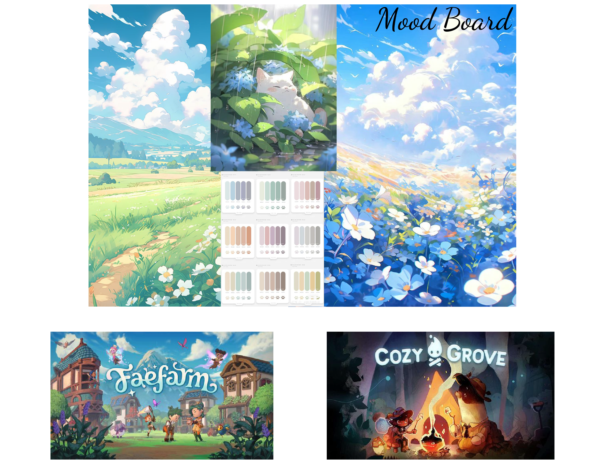

Full Name: Ngan Ha Bui
Email: hnbui@millersville.edu
Social Media:


ABOUT ME
Full Name: Ngan Ha Bui
Email: hnbui@millersville.edu
Social Media:
My Interest


I'm a sophomore at Millersville University with a major in graphic design. My passion for graphic design is deeply rooted in the vibrant and dynamic world of game design. From a young age, I was captivated by video games' immersive visuals and artistic storytelling. This fascination blossomed into a career path when I realized the powerful impact of graphic design in crafting these interactive experiences. I am particularly drawn to the challenge of blending artistic elements with user experience, striving to create visually appealing, emotionally engaging, and intuitive game environments. My journey in graphic design is fueled by a desire to contribute to the gaming world, where every texture, character, and interface plays a crucial role in bringing imaginative universes to life. It's more than creating art; it's about building experiences that resonate with players and leave a lasting impression.
PAST PROJECTS
These are my favorite artworks, each embodies my passion for design and attention to detail
STYLES
My design aesthetic is heavily influenced by the anime art style, characterized by its vibrant visuals and emphasis on cuteness. A deep appreciation for animated films and video games inspires this unique approach.
